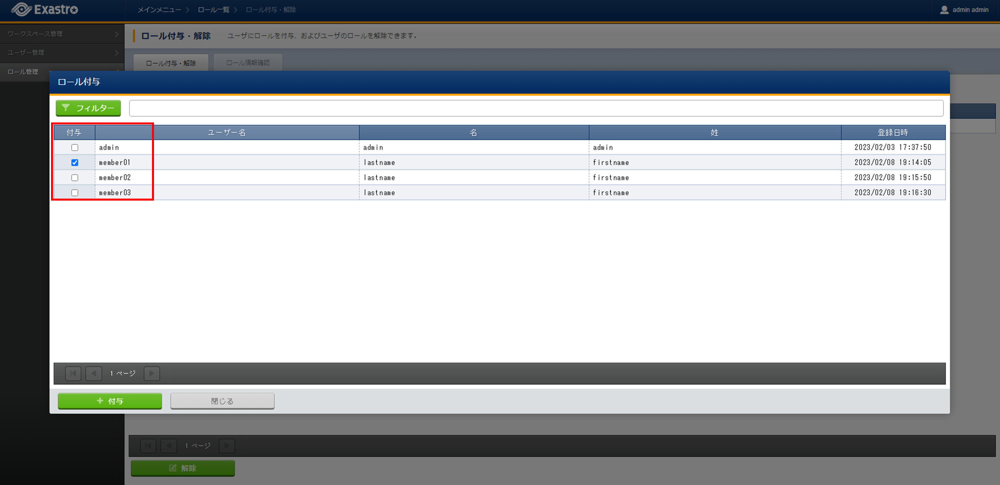

3. ロール¶
3.1. はじめに¶
本書では、Exastro Suite におけるロールについて説明します。
3.2. ロールとは¶
ロールとは、ユーザやワークスペース内のデータといった Exastro システムにおけるリソースに対する操作(作成、更新、削除)権限の集合のことです。
Exastro Suiteのロールの種類としては以下のものがあります。
- オーガナイゼーションロールオーガナイゼーションの管理を行うロールで以下の３つがあります
ロール |
説明 |
|---|---|
オーガナイゼーション管理者
（_organization-manager)
|
ワークスペースの追加やユーザーおよびロールの管理が可能です。 |
ユーザー・ロール管理者
（_organization-user-role-manager)
|
ユーザーおよびロールの管理が可能です。 |
ユーザー管理者
(_organization-user-manager)
|
ユーザーの管理が可能です |
- ワークスペースロール
ロール |
説明 |
|---|---|
ワークスペース管理者
(_{ワークスペースID}-admin)
|
ワークスペースの管理が可能です。 |
カスタムロール |
ユーザーが作成したロールで使用可能なワークスペースを指定および、Exastro IT Automationの使用可能なメニューを指定出来ます。
（Exastro IT Automationの使用可能なメニューの設定はXXXXを参照）
|
3.3. ロール作成とユーザへの紐づけ¶
ロールの新規作成方法とユーザへの紐づけ方法について下記の流れで説明します。
- ロールごとにワークスペースへのアクセス権限をメンテナンスできます。
- ユーザ毎にアクセスを許可するロールを付与することで、ユーザごとにワークスペースへのアクセスを制御することができます。
3.3.1. ロール追加・ワークスペース紐づけ¶
- Exastro Platformにオーガナイゼーション管理者 または _${ws-id}-adminロールに紐づくユーザでログインします。
- Exastro Platformのメニューより をクリックします。

注釈
オーガナイゼーション管理者（ロール管理・ロール付与権限を有するユーザー）またはワークスペース管理者のユーザーでログインしている時のみ、メニューに が表示されます。 - 画面が表示されるので、作成 ボタンをクリックします。

- 画面が表示されるので、ロールの情報を入力し、登録 ボタンをクリックします。

にワークスペースの一覧が表示されるので、当該ロールに紐づけるワークスペースを選択します。

注釈
ワークスペース管理者でログインしているときは、ログインしているユーザーがワークスペース管理者となっているワークスペースのみ選択可能です。
3.3.2. ユーザ・ロール紐づけ¶
- Exastro Platformにオーガナイゼーション管理者 または _${ワークスペースID}-adminロールに紐づくユーザでログインします。
- Exastro Platformのメニューより をクリックします。
注釈
オーガナイゼーション管理者、_${ws-id}-adminロールに紐づくユーザ以外でログインしている時は、メニューに は表示されません。 - 画面が表示されるので、ユーザとロールの紐づけを変更したいロールを選択し ユーザ ボタンをクリックします。

- 画面が表示されるので、ロールとの紐づけを変更したいユーザを選択し、 付与 ボタンをクリックします。

{kind=link}